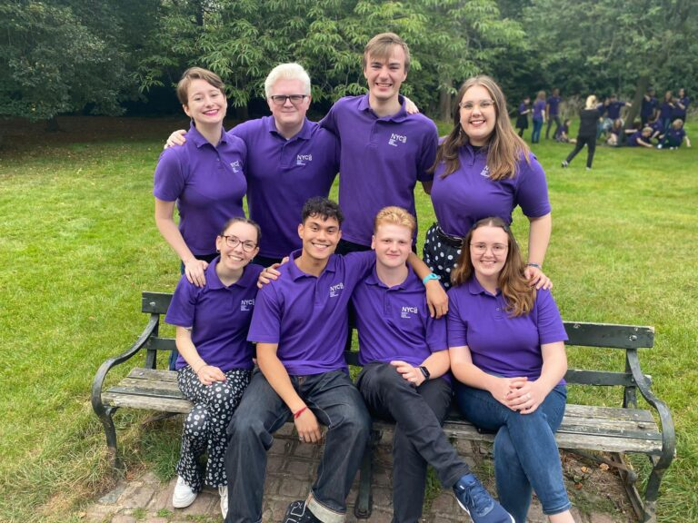

Biography
Josh Quinlan is an English producer, engraver & baritone. Originally hailing from Liverpool, but now living
and working in London, he has worked extensively across the UK and abroad with many of the world's finest
artists and ensembles.
Josh was born in August of 2000 with a rare genetic condition called Oculocutaneous
Albinism; affecting only around 1 in 20,000 people, this reduces the amount of melanin (the
pigment that colours the skin, hair and eyes), and results in reduced visual acuity, amongst other things.
As a result of this, he has been registered as blind since birth.
This reduced visual acuity is perhaps one of the roots of Josh's innate musicality. From a very young age,
he has relied heavily on his hearing, and has thus developed a sort of 'super-sense'. Josh therefore sees
his visual impairment somewhat as a gift, rather than a disability. Needless to say, he is
a passionate advocate for the disability rights movement, and a keen supporter of many of the UK's charities
for people with disabilities, including Guide Dogs UK, the RNIB and the Albinism Fellowship.
On turning four, Josh started learning the piano and clarinet at school, and later went on to join the
Choir of Holy Trinity Church, Southport at the age of six. At Holy Trinity, he received his
foundational musical training under the tutelage of the late David Williams and Ian Wells, singing weekly
services between 2006 and 2014 (as Head Chorister between 2011-2014). This is where his love for choral
music developed, and he has many fond memories of his time with the choir, still occasionally going back to
sing with the choir when he can.
In 2011, Josh participated in his first tour - a series of award-winning performances of Mahler's
Eighth Symphony with the Royal Liverpool Philharmonic Orchestra and Orquestra Sinfónica do
Porto Casa da Música under the baton of Vasily Petrenko. Singing in both the UK and in Portugal (at the Casa
da Música, Porto), this was perhaps one of the most formative moments in Josh's life to date, starting a
life-long love of Mahler's music, and especially for this piece. A year later, at the age of just 12, he
made his solo debuts performing as the treble soloist in Bernstein's Chichester Psalms, Orff's
Carmina Burana, and sang in his final services as a treble, including the legendary solo in
Mendelssohn's Hear My Prayer.
In 2014, Josh started studying at the Royal Northern College of Music's esteemed Saturday
school (Junior RNCM), where he received tuition in singing, conducting, composition, clarinet and advanced
theory under the late Jeffrey Lawton, Juan Ortuno & Eduardo Portal, Matthew Sergeant & Rosemary Broadbent,
Helen Bywater and Amanda Babington respectively. Whilst at the JRNCM, he was one of eight students to found
the JRNCM Close Harmony Ensemble, sang regularly with the Vocal Ensemble (including as soloist in Durufle's
Requiem), and was awarded prizes in Composition and Academic Music.
In his third year at JRNCM, he successfully auditioned for a place as Principal Auxiliary Clarinettist with
the Royal Liverpool Philharmonic Youth Orchestra, later being promoted to the position of
Principal Clarinettist. With the orchestra he had the opportunity to play alongside the Royal Liverpool
Philharmonic and BBC Philharmonic orchestras, in works including Bartok's Concerto for Orchestra,
Gershwin's Rhapsody in Blue, and Mahler's Titan Symphony. In the same year, he was also
appointed a Rushworth Young Composer with the Phil, resulting in a number of professional
commissions from the RLPO and their Youth Company, Tate Modern, the Wilfred Owen Society (for their
commemoration festival in 2018), and award-winning mezzo Jennifer Johnston. On the scheme he received
compositional tuition from Eve Harrison and Ian Stephens. Josh also took his first steps as a conductor
whilst at the Phil, firstly conducting his own compositions and later having the opportunity to conduct the
orchestra in both masterclasses and performances, and received conducting tuition from Vasily Petrenko,
Jonathan Lo, Jessica Cottis and Mihhail Gerts.

2016 also saw the start of Josh's long and continual relationship with the National Youth Choirs of
Great Britain, initially joining as a member of the Training Choir (under Greg Beardsell), and
later going on to join the flagship National Youth Choir and National Youth Chamber Choir (under Ben Parry)
in 2018, with whom he would sing until Spring 2023 (acting as Section Leader between 2021-2023). His first
concert with NYCGB (alongside the Training Choir, Greg Beardsell, Dominic Ellis-Peckham and Robbie Jacobs at
Nottingham Royal Concert Hall) was yet another of the most formative moments in Josh’s career to date.
Though he doesn't sing as a member of the choirs any longer, he is now a member of their core team, managing
their record label, producing recordings and working as a member of the Creative team. His experiences with
National Youth Choir utterly changed his life.
In July 2018, just after completing his A-Levels, Josh was invited to conduct his work Songs of Stone
in Birmingham. A few weeks later, he received a call inviting him to make his Royal Albert Hall
conducting debut alongside the Liverpool Phil that November, only two months after starting his
studies on the undergraduate music programme at the University of York. In the same week as his concert at
the Royal Albert Hall, his music was performed as part of the Wilfred Owen Commemoration Festival in
Liverpool, alongside works by notable composers including the likes of Grace-Evangeline Mason. Dame Patricia
Routledge and Frank Field MP, amongst other notable figures, were in attendance at the event, and noted that
they were "...astonished by the quality of music-making, and [that] the original compositions added
greatly to the ceremony".
Josh's last collaboration with the Royal Liverpool Philharmonic was the release of Jennifer Johnston's
critically-acclaimed album, A Love Letter to Liverpool, on which his arrangement of A Nightingale
Sang in Berkeley Square is featured. The album has been described as "a beauty" (The Sunday Times),
and received warm reviews from Gramophone, The Observer, Opera Now, and numerous others.
In 2019, Josh also performed in the BBC Proms for the first time, alongside the Southbank
Sinfonia and conductor Jessica Cottis. He has since performed at the Proms on numerous occasions, as well as
in other prestigious international festivals like the Ryedale Festival (with the Hallé and
Sir Mark Elder), PRSF New Music Biennial, North-Wales International Music
Festival (with NEW Sinfonia and Robert Guy), VOCES8 Live from London
(alongside The King's Singers) and London Handel Festival (with Laurence Cummings).
In 2021, Josh was appointed a Fellow of the Royal Society of Arts "...in recognition of
[his] outstanding contributions to music" whilst still in his third year at the University of York -
one of the youngest-ever recipients of the honorific. Later that year, he would graduate from York with
first-class honours prior to starting his tenure as the Bass Choral Scholar at Wells
Cathedral (September 2021 to July 2022).
In September 2022, Josh moved to London in order to facilitate is continually-growing schedule of freelance
work. He has continued to go from strength-to-strength, regularly commuting into central London and working
in many of the city's finest concert halls, churches and recording studios.
In May 2023, Josh was selected to sing on the Glyndebourne Academy scheme, receiving expert
coaching in singing, acting and performance practice from some of the best opera tutors in the world. He
looks forward to the many exciting experiences to be had on the scheme, and to singing on the stage at
Glyndebourne later this year.